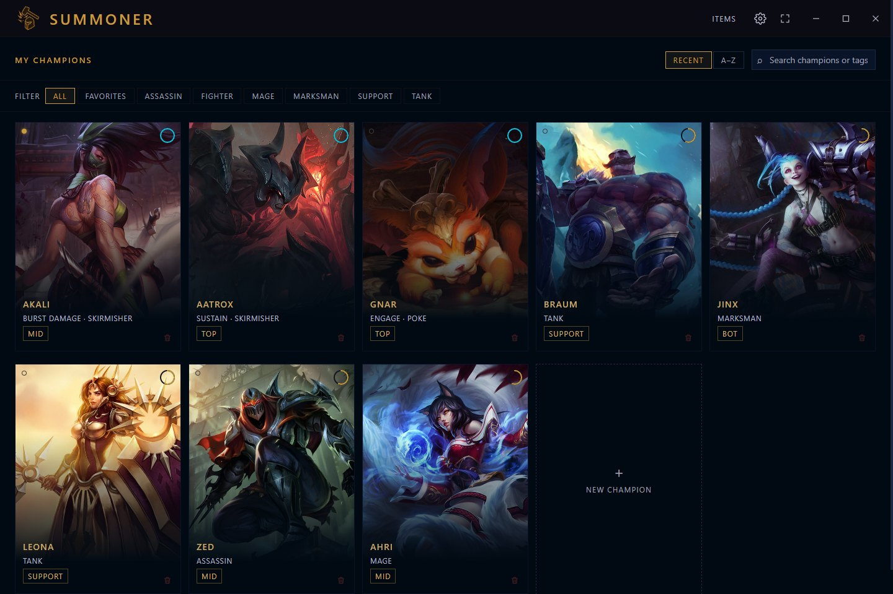
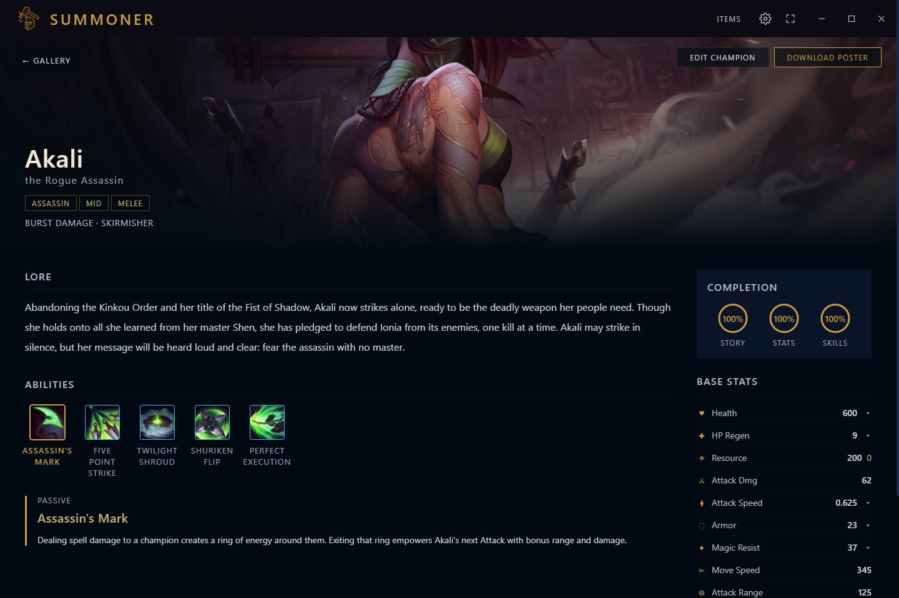
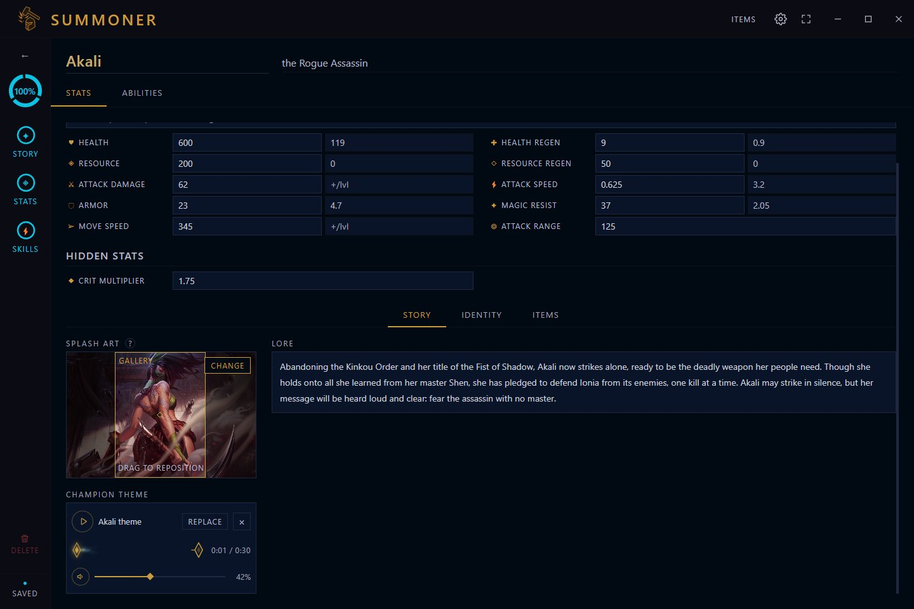
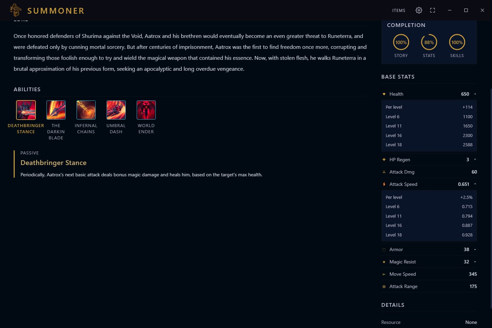
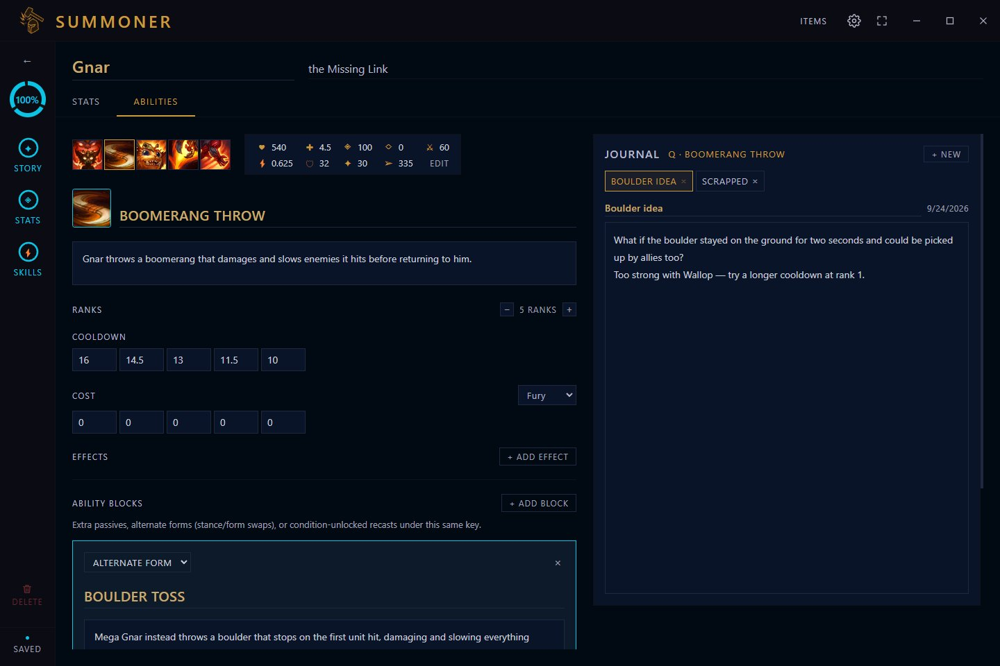
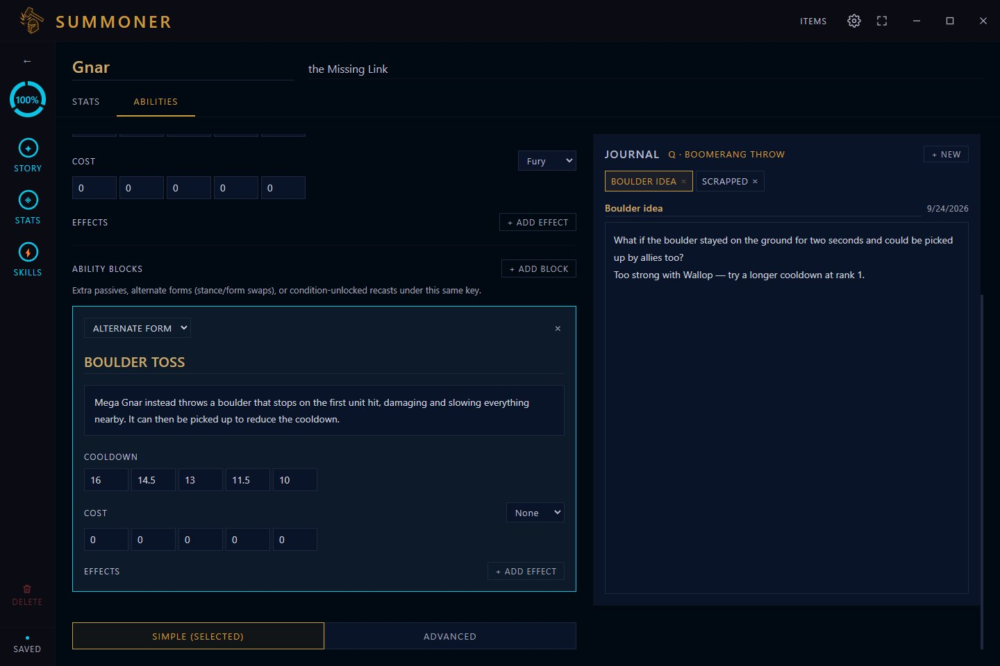
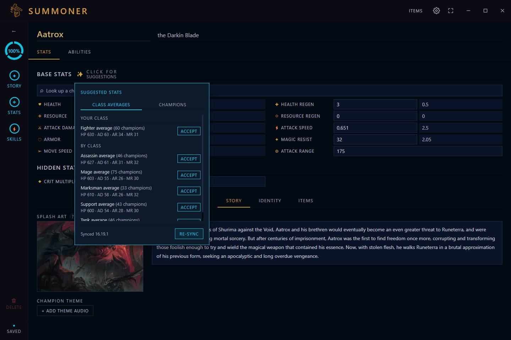
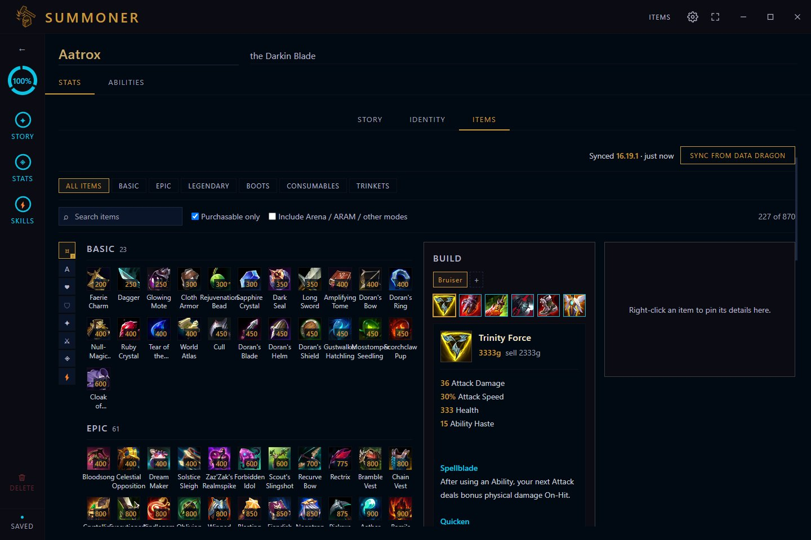

Personal Project
A champion design tool with the feel of Riot's own client. Write a champion's identity and lore, tune per-level base stats that grow the way the game's do, build a five-slot ability kit with per-rank scaling and modular blocks, give the champion a theme song, theorycraft item builds against live patch data, then present the result on a showcase page. Everything is stored locally — no server, no account.
Latest release: v0.4.0








Screenshots show sample champions (Aatrox, Gnar, Akali and a few more) loaded from Riot's public Data Dragon feed. The journal notes and the silent theme track are made up for the demo. Click a screenshot to open it full size.
Name, title, lore, classes, lane, resource type and playstyle. Splash art has a drag-to-reposition focal point, and a gold frame shows exactly what the gallery tile will keep.
Passive plus Q/W/E/R, each with cooldown, cost, and effects that scale per rank, plus custom icons. Any key can take "+" blocks: extra passives, alternate forms like Gnar's Mega spells, or condition-unlocked recasts like Akali's.
A notes column beside every ability for scrapped mechanics and rough ideas, with tabs per ability. In a narrow window it collapses into a compact strip above the form.
Attach a theme song to a champion and play it from the editor or the showcase page. The player uses a hextech-mist progress bar with a gold hover slice for exact seeking, and has its own volume control.
Whole-number and decimal stats are kept apart, attack speed grows as a percentage of its base, and level tables follow the game's own growth curve rather than a straight line.
The full item catalog and champion roster sync from Riot's public feed, with no API key. Suggest base stats from class averages or a real champion, or look up any champion and compare a stat or two without copying anything.
Up to four named item builds per champion, with stacking rules read from the data, pinnable item details, and a real-time stat comparison against the champion's base stats.
A splash-art-forward view page with an icon-row and spotlight ability display and expandable stat tables, plus a one-click downloadable poster of the whole kit.
A slim bar above the editor projects a win rate as you tune: one number with a plus-or-minus band, what is driving it, and what would sharpen it. Stats are scored against real champions of the same class; the ability weights are hand-tuned, and it says so.
Any effect, built in or your own ("taunt"), scaled from a stat picker with base, bonus and total, per-N scalers like +1% per 80 bonus armor, the target's health, and custom values such as stacks. Each effect reads as one tooltip line.
Write {Damage} in a description and the numbers fill in from that effect, so the sentence can't drift from the kit. Rename or remove an effect and the tokens move with it; the showcase and poster show the finished text.
One SQLite file on your machine, with JSON export and import. The installer checks GitHub Releases for updates, and every release runs a test suite first.
contextIsolation on and a narrow preload bridge as the only path between the renderer and the main process.
file:// where path-based routes 404.
better-sqlite3 is built for Electron's ABI and won't load in plain Node, so those run inside Electron's own Node. npm run release runs both suites first.
Where Summoner has been and where it's headed. Shipped means released; everything else is direction, not a promise.
Windows 10/11 installer with built-in update checks. No account, and no internet needed except for the optional Data Dragon sync and update check.
Latest release: v0.4.0
A phone companion for the concept side of a champion: story, identity, lore, and abilities with their alternate forms. Champions move between the two as JSON, and importing updates what it recognises without overwriting the other side's data. It stores everything on your phone and works offline.
Summoner Mobile v0.2.0 · Android 6 or newer
The PC version does more. Per-level base stats that grow like the game's, ability numbers with per-rank scaling, item build theorycrafting, champion theme music, and live Data Dragon patch data all live in the Windows app. The phone app is for the ideas.
The Windows installer isn't code-signed, so Windows SmartScreen may warn you: choose "More info", then "Run anyway". The Android app isn't in the Play Store, so Android will ask you to allow installing from your browser or Files app, and Play Protect may warn about an unknown developer; both are expected. Summoner is an unofficial fan project and isn't endorsed by Riot Games. League of Legends and its champion names and art are trademarks and property of Riot Games, Inc.